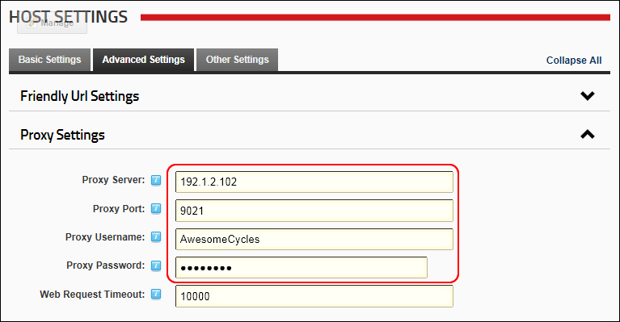

Configuring Proxy Settings
This setting may be required by your hosting provider to enable certain modules such as the RSS News Feed to process outgoing web requests.
- Navigate to Host >
 Host Settings.
Host Settings.
- Select the Advanced Settings tab.
- Expand the Proxy Settings section.
- In the Proxy Server text box, enter the proxy server IP address. E.g. 192.1.2.102. Enter the domain or IP address if you are using a proxy server.
- In the Proxy Port text box, enter the proxy port address. E.g. 8021
- In the Proxy Username text box, enter the username provided by your hosting provider.
- In the Proxy Password text box, enter the password provided by your hosting provider.

-
Click the Update button.